Accueil
A propos
Réalisations
Contact
Mon Parcours
Donavan Leurette
Je suis
24 ans 🎂
Pas-de-Calais 🇫🇷
Autonomie
Esprit d'équipe
A propos
Passionné et ayant baigné dans l'univers informatique depuis mon plus jeune âge, j'ai décidé d'approndir mes connaissances dans ce domaine. Après l'obtention d'un BTS NDRC qui m'a appris quelques bases et de nombreux petits jobs, j'ai commencé une formation en tant que Développeur Web.
Mes compétences
Languages
Framework
CMS

Mes Réalisations
Ci-dessous, vous trouverez des projets réalisés pendant les heures de cours mais également des réalisations personnelles.
La Pizza - Projet réalisé au cours de formation
Réalisation du Front d'un site e-commerce fictif vendant diverses pizza.
Les technologies utilisés : HTML5/CSS3 (Bootstrap)
Thaito - Projet de fin de module Front-End
L'objectif été de synthétiser les connaissances acquises au cours du module Front.
Les technologies utilisés : HTML5/CSS3 (Bootstrap) - JavaScript (React)
Club de Judo-Jujitsu - Projet de Stage
Ce projet a été réalisé lors de ma période de formation en millieu professionnel :
J'ai eu objectif la refonte complète du front.
Les technologies utilisées : HTML5/CSS3 - JavaScript - PHP (Laravel)
Contact
Un projet ? Une question ?
Contactez-moi !
07 78 70 91 16
donavanlrt@gmail.com
Retrouvez-moi également sur
Mon Parcours
Retrouvez ci-dessous mes diverses expériences
Consultez mon CV ici
Téléchargez mon CV ici